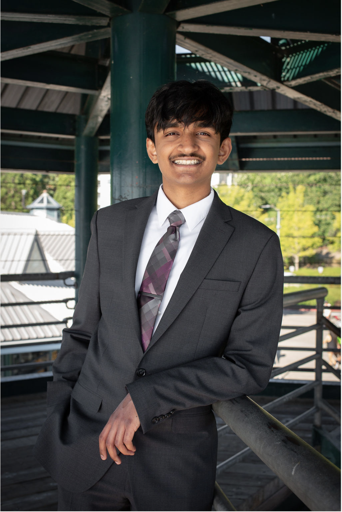

Hi, I'm Shreyas!
About
I'm currently a freshman at the University of Washington, majoring in Computer Engineering at the Allen School. I graduated from Liberty High School in June 2026.
Interests
In computer science, I'm primarily interested in robotics and computer vision, specifically their human-centric applications. I'm also interested artificial intelligence, deep/machine learning, and neural computation.
Outside of academics, I love to run and read. I played the oboe and piano throughout my childhood (hoping to get back into those soon) and I'm currently getting into rock climbing.
I also love video games: feel free to ask me anything about any Mario, Splatoon, or Animal Crossing franchise-related. I also REALLY want Cities Skylines right now...
News
Nothing new thus far.